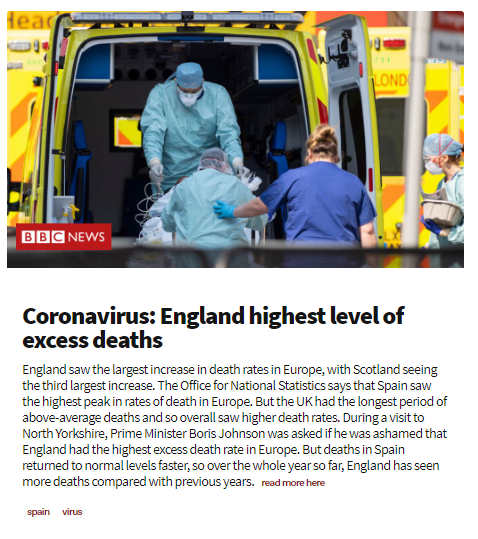

COVerage was made to take a user's location and get the latest news from local outlets about how the COVID-19 pandemic is affecting the community. We show news by breaking it down into five categories: Policy changes (local laws/curfews), Finance, Vaccine progress, Education, and Statistics/Spread rates.
As a contributor to this project, I managed the development and wrote thousands of lines of code. I also co-created the algorithm we use to rank our search results. I first-authored our paper. Our team presented this as a talk to the Stanford Electrical Engineering faculty in Summer of 2020. My team and I initially started COVerage as a response to the lack of up to date and reliable news for how COVID-19 was affecting our commnunities. Whether we were looking at the number of cases in our county or how our local grocery stores are affected, we couldn't find a solid way to view everything at once. This is why we created COVerage.
A cool feature of COVerage that we got a chance to implement is news from around the world. For example, if a user is looking at COVerage's Interface from Tokyo, Japan, then COVerage will show news in Japanese and will show news from local Tokyo news.
You can find our GitHub repository here
My team's involvement with this project was through the STEM2SHTEM Stanford Compression Forum Internship program. After the program ended, our team met with some professors within the Electrical Engineering Department to discuss continuing our research into Fall. We then had the opportunity to talk about our project with Stanford_Journalism. This project was my introduction to computer science research.